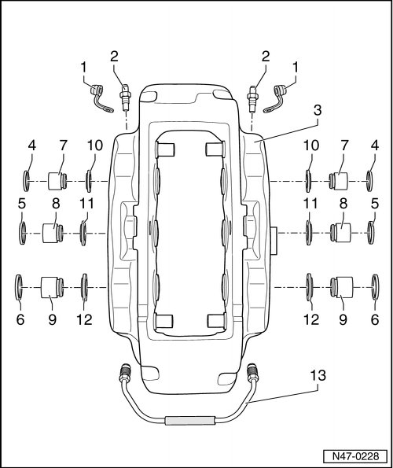

17" (1LC) Caliper and 18" (1LF) Calipers
Brake Caliper Assembly Overview
• Install complete repair kit when servicing.
• Only use mineral spirits to clean brake parts.
• Apply thin coat of assembly paste (G 052 150 A2) to brake cylinders, pistons and seals.

1 Dust cap
• Install onto bleeder valve.
• Secures brake pad wear indicator wiring.
2 Bleeder valve, 12 Nm
• Apply a thin coat of assembly paste (G 052 150 A2) to the threads before installing.
• SW 10.
3 Brake caliper
4 Seal for 34/30 mm piston
• Removing and installing, refer to --> [ Brake Caliper Piston ] Brake Caliper Piston.
5 Seal for 36/34 mm piston
• Removing and installing, refer to --> [ Brake Caliper Piston ] Brake Caliper Piston.
6 Seal for 38 mm piston
• Removing and installing, refer to --> [ Brake Caliper Piston ] Brake Caliper Piston.
7 34/30 mm piston
• Removing and installing, refer to --> [ Brake Caliper Piston ] Brake Caliper Piston.
• First apply thin coat of brake cylinder paste (G 052 150 A2) on piston.
8 36/34 mm piston
• Removing and installing, refer to --> [ Brake Caliper Piston ] Brake Caliper Piston.
• First apply thin coat of brake cylinder paste (G 052 150 A2) on piston.
9 38 mm piston
• Removing and installing, refer to --> [ Brake Caliper Piston ] Brake Caliper Piston.
• First apply thin coat of brake cylinder paste (G 052 150 A2) on piston.
10 Protective cap for 34/30 mm piston
• Do not damage when installing piston.
11 Protective cap for 36/34 mm piston
• Do not damage when installing piston.
12 Protective caps for 38 mm piston
• Do not damage when installing piston.
13 Connecting line, 17 Nm